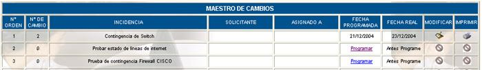
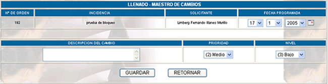
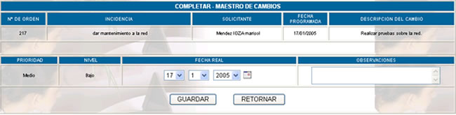
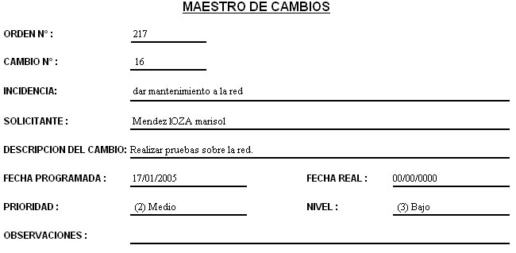

MAESTRO
DE CAMBIOS
Al hacer click sobre esta opción usted podrá
ver la lista de control de usuarios:

Nro orden; número correlativo de ordenes.
Nro. de cambio; número de cambios realizados sobre una orden.
Incidencia; explica el porque del cambio.
Solicitante; indica el nombre de la persona que solicita este cambio.
Asignado a; indica el nombre de la persona a la que fue asignada la orden de cambio.
Al hacer click en Programar mostrará la siguiente pantalla:

En esta pantalla se muestran los datos relativos al cambio a ser programado, es decir: Nro. orden, incidencia, solicitante. Se presentan los siguientes campos para ser registrados:
Fecha programada; se ingresa la fecha programada del cambio.
Descripción del cambio; se coloca una descripción del cambio a ser programado.
Prioridad; indica la prioridad de este cambio, que puede ser: alto, medio, bajo.
Nivel; indica el nivel de complejidad de realización del cambio, que puede ser: alto, medio, bajo.
Luego de guardar los cambios realizados en la pantalla de programación del cambio, se habilitará el link de Llenar fecha realizada. Al elegir esta opción, se mostrará la siguiente pantalla:

En esta pantalla se muestra los datos del cambio programdo, es decir: Nro. orden, incidencia, solicitante, fecha programada, descripción del cambio, prioridad y nivel. Se presentan los siguientes campos para ser registrados:
Fecha real; se coloca la fecha de realización del cambio.
Observaciones; se coloca algunas observaciones surgidas al realizar el cambio.
Modificar; haciendo click en esta opción usted podrá ver los datos del cambio programado y modificarlo de acuerdo a sus requerimientos
Imprimir; haciendo click en esta opción usted podrá obtener un reporte de los datos del cambio programado.
